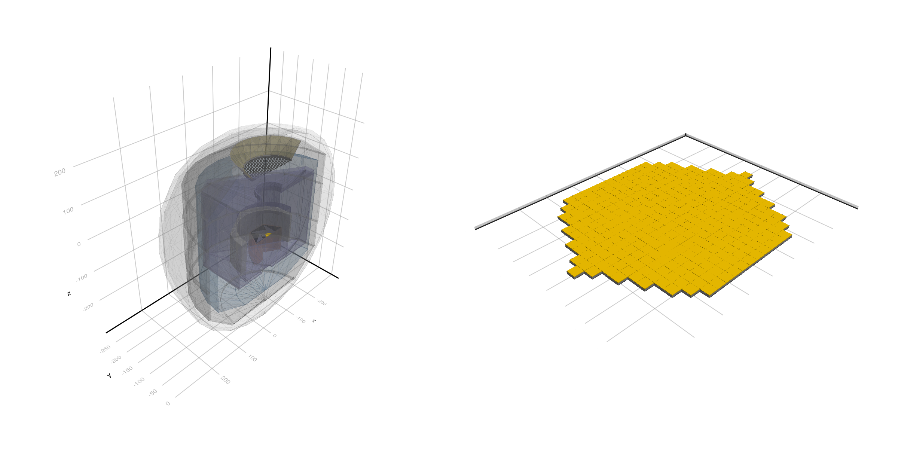
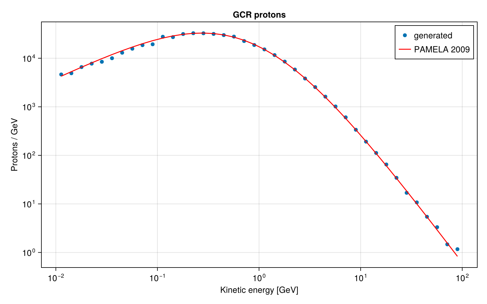
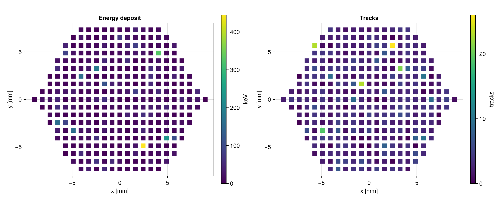
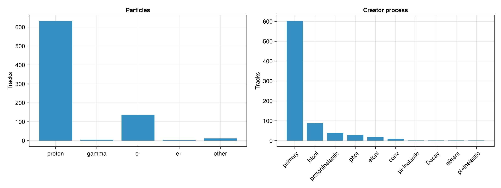
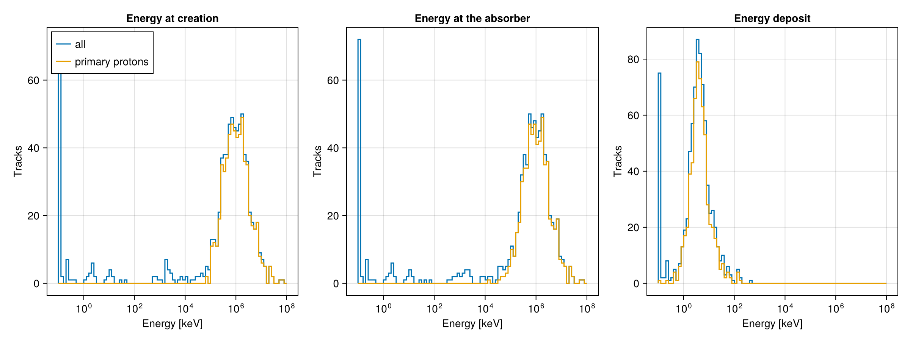
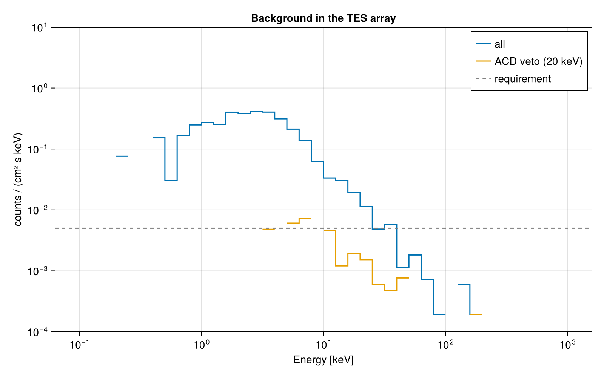

X-ray TES Detector
This example was generated by Claude Code from the xray_TESdetector C++ example of the Geant4 distribution.
This example is a port of the advanced Geant4 example xray_TESdetector, by P. Dondero and R. Stanzani. It simulates the particle background of an X-ray detector in space: a simplified mass model of the X-IFU spectrometer of the ATHENA mission, from an early configuration developed within the ESA AREMBES project.
The detector is an array of 317 Transition-Edge Sensor (TES) pixels with 3 μm thick bismuth absorbers, arranged in a hexagon. Below the array there is an anti-coincidence detector (ACD), and around it the supports, three thermal shields, the cryostat, an optical filter and an aluminium sphere that represents the spacecraft. Galactic cosmic ray (GCR) protons arrive isotropically, with the spectrum expected at the L2 Lagrangian point. Most of them cross the spacecraft without touching the detector, but they and their secondaries leave a background in the absorbers. Understanding this background is the purpose of the simulation.
The example shows:
- building a complex geometry from a CAD model with boolean solids (
G4SubtractionSolid), polyhedra, cones, extruded solids and many placements (a mesh of about 2000 bars), see XrayTESDetector.jl - a parameterised volume (
G4PVParameterised) for the 317 pixels, positioned by a Julia function - a region (
G4Region) with its own production cuts for the volumes near the detector - a primary generator that samples the GCR proton spectrum and shoots isotropically from a sphere
- a physics list adapted to space radiation, configured with
G4EmParameters: fluorescence, Auger electrons and PIXE, and single scattering, in the region near the detector - collecting the energy deposited in the absorbers in the stepping action, keeping only the steps in the volumes of interest, and analysing it as the ROOT macro of the C++ example does
Differences with the C++ example:
- The C++ example uses its own EM constructor (
G4EmStandardPhysics_SpacePhysics) with QBBC. Here we use QBBC withG4EmStandardPhysics_option4, which has very similar models (Livermore photoelectric, low energy Compton, Goudsmit-Saunderson multiple scattering, low energy ionisation models). - The pixel positions are computed instead of read from
pixelpos.txt. They are the same as in that file. - The C++ example calls
SetAugerCascade(false)afterSetAuger(true), which switches off the Auger electrons in recent Geant4 versions. Here they are switched on. - Instead of writing a ROOT ntuple, the deposits are kept in Julia structures and analysed at the end of the run.
You can also download this example as a Jupyter notebook and a plain Julia source file.
Table of contents
- Loading the necessary Julia modules
- Define the Detector
- Define the Physics List
- Define the Primary Generator
- Define the Simulation Data
- Define the User Actions
- Create the Application
- Configure and Initialize
- Draw the geometry
- Run the simulation
- Primary spectrum
- Energy deposited per pixel
- Composition of the background
- Spectra on the detector
- Background spectrum and anti-coincidence
Loading the necessary Julia modules
Load the Geant4 and Geant4.SystemOfUnits modules, FHist for the histograms, LinearAlgebra and GeometryBasics for the vectors of the generator, and a Makie backend for the plots. Loading Makie also activates the drawing of the geometry.
using Geant4
using Geant4.SystemOfUnits
using FHist, GeometryBasics, Printf
using LinearAlgebra: dot, cross, normalize ## Geant4 also exports `dot` and `cross`
using CairoMakie
Define the Detector
The detector is defined in the XrayTESDetector.jl file, which we include here not to clutter the example. From the inside out:
- the TES array: 317 pixels with a pitch of 0.814 mm, each with a 3 μm Bi absorber, a 0.75 μm Si₃N₄ membrane and a 200 μm Si grid, inside a hexagon of 8.5 mm apothem, surrounded by a Si wafer
- the anti-coincidence detector: 4 Si trapezoids, 200 μm thick, 0.75 mm below the array, on a Cu plate
- a Cu cage of columns and walls, 60 mm high, below the detector
- the first thermal shield (Cryoperm), a ring, the second (extruded Al) and the third (thin Al) thermal shields, and the outer Al vessel of the cryostat
- the filter on top: 20 nm of Al on a stainless steel mesh, in an Al carrier, and a Ti aperture cylinder with an Au coating inside
- a 1 cm thick Al sphere of 26 cm radius that represents the spacecraft
include(joinpath(@__DIR__, "XrayTESDetector.jl"))
tes = XrayTESDetector()Main.var"##142".XrayTESDetector
absorberThickness: Float64 0.003
membraneThickness: Float64 0.00075
gridThickness: Float64 0.2
gridBeam: Float64 0.165
waferThickness: Float64 0.25
pixelPitch: Float64 0.814
pixelGap: Float64 0.011
arrayApothem: Float64 8.5
pixelApothem: Float64 8.4
checkOverlaps: Bool false
arrayPV: CxxWrap.CxxWrapCore.CxxPtr{Geant4.G4VPhysicalVolume}
absorberPV: CxxWrap.CxxWrapCore.CxxPtr{Geant4.G4VPhysicalVolume}
acdLVs: Array{CxxWrap.CxxWrapCore.CxxPtr{Geant4.G4LogicalVolume}}((0,))
Define the Physics List
QBBC with the option 4 of the standard EM physics, which is the most accurate at low energy, and the radioactive decay of the activated nuclei. The atomic deexcitation (fluorescence, Auger electrons and PIXE) is configured later with G4EmParameters.
struct XrayTESPhysics <: G4VUserPhysicsList
function XrayTESPhysics(verbose)
pl = QBBC(verbose)
ReplacePhysics(pl, move!(G4EmStandardPhysics_option4(verbose)))
RegisterPhysics(pl, move!(G4RadioactiveDecayPhysics(verbose)))
return pl
end
endDefine the Primary Generator
The GCR protons have kinetic energies between 10 MeV and 100 GeV with the spectrum measured by PAMELA in 2009 (in protons/(cm² s sr GeV), for the kinetic energy T in GeV), with a solar modulation potential ϕ = 0.379 GV:
gcrFlux(T; ϕ=0.379, m=0.938) = 1.9 * ((T + ϕ) * (T + ϕ + 2m))^-1.39 * T * (T + 2m) /
((1 + 0.4866 * ((T + ϕ) * (T + ϕ + 2m))^-1.255) * (T + ϕ) * (T + ϕ + 2m))gcrFlux (generic function with 1 method)The energy is sampled from it with the rejection method. As in the C++ example, the protons start at a random point of a sphere of radius R = 27 cm centred 8 cm above the detector and go towards another random point of the same sphere. This gives an isotropic and uniform flux inside the sphere, but very few protons hit the detector (about 1 in 1000).
To get more statistics, the generator can instead aim at a target sphere of radius r around the detector (target = r). The direction is isotropic and the line goes through a random point of the disk of radius r perpendicular to it, centred at the detector. The proton starts where the line enters the sphere of radius R. Inside the target sphere the flux is still isotropic and uniform, so the results near the detector are the same, except for the secondaries of the protons that pass farther away.
In both cases we know the exposure time that corresponds to N protons: an isotropic intensity I (in protons/(cm² s sr)) gives $4\pi^2 r^2 I$ protons per second through a sphere of radius r.
Geant4.jl shares the data of the generator between the worker threads, so each thread creates its own particle gun and stores it in a dictionary indexed by the thread ID.
mutable struct GCRGunData <: G4JLGeneratorData
guns::Dict{Int, CxxPtr{G4ParticleGun}}
lock::ReentrantLock
radius::Float64
center::Float64 ## z of the centre of the sphere
target::Float64 ## radius of the target sphere around the detector (0 for none)
emin::Float64
emax::Float64
end
function GCRGenerator(; radius=27cm, center=8cm, target=0., emin=10MeV, emax=100GeV)
data = GCRGunData(Dict(), ReentrantLock(), radius, center, target, emin, emax)
function init(data::GCRGunData, ::Any)
gun = move!(G4ParticleGun())
SetParticleByName(gun, "proton")
lock(data.lock) do
data.guns[G4Threading!G4GetThreadId()] = gun
end
end
function isotropic()
cθ = 1 - 2rand()
sθ, ϕ = sqrt(1 - cθ^2), 2π * rand()
return Vec3(sθ * cos(ϕ), sθ * sin(ϕ), cθ)
end
function generate(evt::G4Event, data::GCRGunData)::Nothing
gun = data.guns[G4Threading!G4GetThreadId()]
fmax = 0.268 ## maximum of the flux
T = 0.
while true
T = data.emin + rand() * (data.emax - data.emin)
rand() * fmax <= gcrFlux(T/GeV) && break
end
C = Vec3(0., 0., data.center)
if data.target > 0
u = isotropic()
e1 = normalize(cross(u, abs(u[3]) < 0.9 ? Vec3(0., 0., 1.) : Vec3(1., 0., 0.)))
e2 = cross(u, e1)
ρ, ϕ = data.target * sqrt(rand()), 2π * rand()
q = ρ * cos(ϕ) * e1 + ρ * sin(ϕ) * e2 ## point of the disk around the detector
w = q - C
s = dot(u, w) + sqrt(dot(u, w)^2 - dot(w, w) + data.radius^2)
a, dir = q - s * u, u
else
a, b = C + data.radius * isotropic(), C + data.radius * isotropic()
dir = b - a
end
SetParticleEnergy(gun, T)
SetParticlePosition(gun, G4ThreeVector(a...))
SetParticleMomentumDirection(gun, G4ThreeVector(dir...))
GeneratePrimaryVertex(gun, CxxPtr(evt))
end
G4JLPrimaryGenerator("GCRGun", data; init_method=init, generate_method=generate)
endGCRGenerator (generic function with 1 method)Integrated intensity between emin and emax (protons/(cm² s sr)) and exposure time for N protons
function intensity(data::GCRGunData)
T = exp.(range(log(data.emin/GeV), log(data.emax/GeV), length=10000))
return sum(diff(T) .* (gcrFlux.(T[1:end-1]) .+ gcrFlux.(T[2:end])) ./ 2) / cm2 / s
end
function exposure(data::GCRGunData, n)
r = data.target > 0 ? data.target : data.radius
return n / (4π^2 * r^2 * intensity(data))
end
generator = GCRGenerator(target=5cm)Geant4.G4JLPrimaryGenerator{Main.var"##142".GCRGunData}("GCRGun", Main.var"##142".GCRGunData(Dict{Int64, CxxWrap.CxxWrapCore.CxxPtr{Geant4.G4ParticleGun}}(), ReentrantLock(), 270.0, 80.0, 50.0, 10.0, 100000.0), Main.var"##142".var"#init#12"(), Main.var"##142".var"#generate#16"{Main.var"##142".var"#isotropic#15"}(Main.var"##142".var"#isotropic#15"()), Geant4.G4JLGeneratorAction[])Define the Simulation Data
Each track that deposits energy in the absorbers is recorded as a Deposit, with the particle, the process that created it, its kinetic energy at creation and when it entered the absorber, and the total energy deposited. We also accumulate the energy and the number of tracks in each pixel, and the energy of all the primary protons.
A TES pixel measures the total energy deposited during an event, so for the background spectrum we record a PixelHit for each pixel with energy in an event, together with the energy deposited in the anti-coincidence detector in the same event.
struct PixelHit
event::Int
pixel::Int
edep::Float64
acd::Float64 ## energy in the ACD in the same event
end
mutable struct Deposit
event::Int
track::Int
parent::Int
particle::String
process::String ## creator process ("primary" for the primary protons)
pixel::Int ## first pixel hit
lastpixel::Int
vertexEnergy::Float64 ## kinetic energy at creation
entryEnergy::Float64 ## kinetic energy when entering the absorber
edep::Float64
end
mutable struct XrayTESSimData <: G4JLSimulationData
##---Event data---------------------------------------------------------------------------------
event::Int
tracks::Dict{Int, Deposit} ## deposits of the current event by track ID
pixels::Dict{Int, Float64} ## energy in each pixel in the current event
acd::Float64 ## energy in the ACD in the current event
##---Run data-----------------------------------------------------------------------------------
deposits::Vector{Deposit}
hits::Vector{PixelHit}
primaries::Vector{Float64} ## kinetic energy of the primaries
pixelEdep::Vector{Float64}
pixelTracks::Vector{Int}
XrayTESSimData(npixels=317) = new(0, Dict(), Dict(), 0., Deposit[], PixelHit[], Float64[], zeros(npixels), zeros(Int, npixels))
endWith several threads the results of each thread are merged at the end of the run
function Base.merge!(x::XrayTESSimData, y::XrayTESSimData)
append!(x.deposits, y.deposits)
append!(x.hits, y.hits)
append!(x.primaries, y.primaries)
x.pixelEdep .+= y.pixelEdep
x.pixelTracks .+= y.pixelTracks
return x
end
function Base.empty!(x::XrayTESSimData)
empty!(x.deposits)
empty!(x.hits)
empty!(x.primaries)
fill!(x.pixelEdep, 0)
fill!(x.pixelTracks, 0)
return x
endDefine the User Actions
- beginrun clears the run data (of each thread)
- endrun merges the data of the worker threads into the data of the master thread
- beginevent keeps the event number and clears the deposits of the event
- pretrackaction records the energy of the primary protons
- stepaction accumulates the energy deposited in the ACD and in the absorbers. Only the steps in the absorbers are recorded, which keeps the output small (the C++ example applies a similar selection to the ntuple). The pixel number is the copy number of the pixel element, one level above the absorber.
- endevent adds the deposits and the pixel hits of the event to the run data
function beginrun(::G4Run, app::G4JLApplication)::Nothing
empty!(getSIMdata(app))
return
end
function endrun(::G4Run, app::G4JLApplication)::Nothing
if G4Threading!G4GetThreadId() < 0 && app.nthreads > 0
foldl(merge!, app.simdata[2:end]; init=app.simdata[1])
end
return
end
function beginevent(evt::G4Event, app::G4JLApplication)::Nothing
data = getSIMdata(app)
data.event = GetEventID(evt)
empty!(data.tracks)
empty!(data.pixels)
data.acd = 0.
return
end
function pretrackaction(track::G4Track, app::G4JLApplication)::Nothing
GetParentID(track) == 0 && push!(getSIMdata(app).primaries, GetKineticEnergy(track))
return
end
function stepaction(step::G4Step, app::G4JLApplication)::Nothing
pre = GetPreStepPoint(step)
pv = GetPhysicalVolume(pre)
if pv != app.detector.absorberPV
GetLogicalVolume(pv) in app.detector.acdLVs && (getSIMdata(app).acd += GetTotalEnergyDeposit(step))
return
end
data = getSIMdata(app)
track = GetTrack(step)
id = GetTrackID(track)
pixel = GetCopyNumber(GetTouchable(pre), 1) + 1
dep = get(data.tracks, id, nothing)
if isnothing(dep)
creator = GetCreatorProcess(track)
process = creator == C_NULL ? "primary" : String(GetProcessName(creator))
particle = String(GetParticleName(GetParticleDefinition(track)))
dep = Deposit(data.event, id, GetParentID(track), particle, process, pixel, 0,
GetVertexKineticEnergy(track), GetKineticEnergy(pre), 0.)
data.tracks[id] = dep
end
if pixel != dep.lastpixel
data.pixelTracks[pixel] += 1
dep.lastpixel = pixel
end
edep = GetTotalEnergyDeposit(step)
dep.edep += edep
data.pixelEdep[pixel] += edep
data.pixels[pixel] = get(data.pixels, pixel, 0.) + edep
return
end
function endevent(::G4Event, app::G4JLApplication)::Nothing
data = getSIMdata(app)
append!(data.deposits, values(data.tracks))
for (pixel, edep) in data.pixels
edep > 0 && push!(data.hits, PixelHit(data.event, pixel, edep, data.acd))
end
return
endendevent (generic function with 1 method)Create the Application
app = G4JLApplication(; detector = tes, ## detector with parameters
simdata = XrayTESSimData(), ## simulation data structure
generator = generator, ## primary particle generator
nthreads = 8, ## number of threads (MT)
physics_type = XrayTESPhysics, ## what physics list to instantiate
stepaction_method = stepaction, ## step action method
pretrackaction_method = pretrackaction, ## pre-tracking action
begineventaction_method = beginevent, ## begin-event action
endeventaction_method = endevent, ## end-event action
beginrunaction_method = beginrun, ## begin run action
endrunaction_method = endrun ## end run action
);
**************************************************************
Geant4 version Name: geant4-11-04-patch-01 [MT] (13-March-2026)
<< in Multi-threaded mode >>
Copyright : Geant4 Collaboration
References : NIM A 506 (2003), 250-303
: IEEE-TNS 53 (2006), 270-278
: NIM A 835 (2016), 186-225
WWW : http://geant4.org/
**************************************************************
Configure and Initialize
The EM parameters are set after the physics list is configured and before the initialization. As in the C++ example, the atomic deexcitation (fluorescence, Auger electrons and PIXE) is active only in the InnerRegion defined with the geometry, where the multiple scattering is also replaced by single scattering (G4EmStandardSS), which is more precise in thin layers. The production cuts are 1 mm everywhere.
configure(app)
em = G4EmParameters!Instance()
SetFluo(em, true)
SetAuger(em, true)
SetPixe(em, true)
SetDeexcitationIgnoreCut(em, false)
SetDeexActiveRegion(em, innerRegion, true, true, true)
AddPhysics(em, innerRegion, "G4EmStandardSS")
SetMuHadLateralDisplacement(em, false)
SetBremsstrahlungTh(em, 10e3GeV) ## 10 TeV
ui`/run/setCut 1 mm`
initialize(app)
### === G4UAtomicDeexcitation::InitialiseForNewRun()
======================================================================
The G4PenelopeIonisationModel is being used with the PIXE flag ON.
Atomic de-excitation will be produced statistically by the PIXE
interface by using the shell cross section --> Livermore
The built-in model procedure for atomic de-excitation is disabled.
*Please be sure this is intended*, or disable PIXE by
/process/em/pixe false
======================================================================
Draw the geometry
A cut-away view of the whole geometry, and the TES array with its 317 pixels.
world = GetWorldVolume()
fig = Figure(size=(1200, 600))
s1 = LScene(fig[1,1])
Geant4.draw!(s1, world, clip=:y)
s2 = LScene(fig[1,2])
Geant4.draw!(s2, tes.arrayPV)
Run the simulation
The generator aims at a sphere of 5 cm radius around the detector. Even so, the detector is small (about 2 cm²), so only about 1% of the protons give a deposit in the absorbers. Limiting the atomic deexcitation to the InnerRegion is important for the speed: with deexcitation in all the materials the simulation is more than 10 times slower.
data = app.simdata[1]
nevents = 50000
@time beamOn(app, nevents)
deposits = filter(d -> d.edep > 0, data.deposits)
T = exposure(generator.data, nevents)
@printf "GCR intensity: %.3f protons/(cm² s sr), exposure time: %.2f s\n" intensity(generator.data)*cm2*s T/s
@printf "Tracks with deposits in the absorbers: %d, in %d events\n" length(deposits) length(unique(d.event for d in deposits)) 31.119721 seconds (29.61 M allocations: 492.461 MiB, 0.92% gc time, 8.78% compilation time: <1% of which was recompilation)
GCR intensity: 0.407 protons/(cm² s sr), exposure time: 124.40 s
Tracks with deposits in the absorbers: 788, in 667 events
Primary spectrum
The kinetic energy of the generated protons, compared with the GCR spectrum.
fig = Figure(size=(800, 500))
ax = Axis(fig[1,1], title="GCR protons", xlabel="Kinetic energy [GeV]", ylabel="Protons / GeV", xscale=log10, yscale=log10)
edges = 10 .^ range(-2, 2, length=41)
h = Hist1D(data.primaries/GeV; binedges=edges)
widths = diff(edges)
scatter!(ax, bincenters(h), bincounts(h) ./ widths, label="generated")
norm = length(data.primaries) / (sum(gcrFlux.(bincenters(h)) .* widths))
lines!(ax, bincenters(h), norm * gcrFlux.(bincenters(h)), color=:red, label="PAMELA 2009")
axislegend(ax)
Energy deposited per pixel
The total energy and the number of tracks in each pixel, at the position of the pixel.
pixels = pixelPositions(tes)
fig = Figure(size=(1200, 500))
for (i, (values, title, label)) in enumerate(((data.pixelEdep/keV, "Energy deposit", "keV"),
(data.pixelTracks, "Tracks", "tracks")))
ax = Axis(fig[1, 2i-1], title=title, xlabel="x [mm]", ylabel="y [mm]", aspect=DataAspect())
sc = scatter!(ax, first.(pixels), last.(pixels), color=values, marker=:rect, markersize=18, colormap=:viridis)
Colorbar(fig[1, 2i], sc, label=label)
end
Composition of the background
The particles that deposit energy in the absorbers, and the processes that created them.
category(p) = p in ("proton", "gamma", "e-", "e+") ? p : "other"
cats = ["proton", "gamma", "e-", "e+", "other"]
counts = [count(d -> category(d.particle) == c, deposits) for c in cats]
procs = sort(unique(d.process for d in deposits), by = p -> -count(d -> d.process == p, deposits))
pcounts = [count(d -> d.process == p, deposits) for p in procs]
fig = Figure(size=(1200, 450))
ax1 = Axis(fig[1,1], title="Particles", xticks=(1:length(cats), cats), ylabel="Tracks")
barplot!(ax1, 1:length(cats), counts)
ax2 = Axis(fig[1,2], title="Creator process", xticks=(1:length(procs), procs), xticklabelrotation=π/4, ylabel="Tracks")
barplot!(ax2, 1:length(procs), pcounts)
Spectra on the detector
For all the tracks and for the primary protons: the kinetic energy at creation (for the primaries this is the energy of the GCR proton), the kinetic energy when entering the absorber, and the energy deposited. Most primary protons cross the 3 μm absorber as minimum ionizing particles and deposit about 1 keV.
primary = filter(d -> d.parent == 0, deposits)
fig = Figure(size=(1200, 450))
for (i, (field, title)) in enumerate(((:vertexEnergy, "Energy at creation"), (:entryEnergy, "Energy at the absorber"), (:edep, "Energy deposit")))
ax = Axis(fig[1,i], title=title, xlabel="Energy [keV]", ylabel="Tracks", xscale=log10)
edges = 10 .^ range(-1, 8, length=91)
energies = [getfield(d, field)/keV for d in deposits]
stephist!(ax, Hist1D(clamp.(energies, 0.1, 1e8); binedges=edges), label="all")
isempty(primary) || stephist!(ax, Hist1D(clamp.([getfield(d, field)/keV for d in primary], 0.1, 1e8); binedges=edges), label="primary protons")
i == 1 && axislegend(ax, position=:lt)
end
Background spectrum and anti-coincidence
The spectrum of the energy measured by the pixels, normalized to the exposure time and to the area of the array, in counts/(cm² s keV). Most of the background comes from protons that cross the array and the ACD below it, so it is rejected by vetoing the events with more than 20 keV in the ACD. The X-IFU requirement for the residual background was 5×10⁻³ counts/(cm² s keV) between 2 and 10 keV. The rejection here is optimistic because the ACD only sees the particles that reach it from above or below. The statistics after the veto are limited, so increase the number of events to see the residual background.
area = length(pixels) * (tes.pixelPitch - tes.pixelGap)^2
edges = 10 .^ range(-1, 3, length=41)
fig = Figure(size=(800, 500))
ax = Axis(fig[1,1], title="Background in the TES array", xlabel="Energy [keV]", ylabel="counts / (cm² s keV)",
xscale=log10, yscale=log10)
for (sel, label) in ((h -> true, "all"), (h -> h.acd < 20keV, "ACD veto (20 keV)"))
h = Hist1D([hit.edep/keV for hit in data.hits if sel(hit)]; binedges=edges)
rate = bincounts(h) ./ diff(edges) ./ (area/cm2) ./ (T/s)
band = filter(x -> 2keV <= x.edep <= 10keV && sel(x), data.hits)
@printf "%-18s: %.3g counts/(cm² s keV) in 2-10 keV\n" label length(band) / 8 / (area/cm2) / (T/s)
stairs!(ax, edges, [rate; rate[end]], step=:post, label=label)
end
hlines!(ax, [5e-3], color=:gray, linestyle=:dash, label="requirement")
ylims!(ax, 1e-4, 10)
axislegend(ax, position=:rt)
This page was generated using Literate.jl.